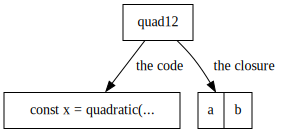
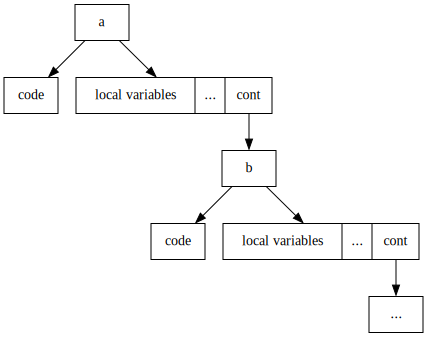

Implementing async-await syntax using delimited continuations
The idea of a monad abstracts over a bunch of different effects:
- Within the list monad, you have something like
choose :: [a] -> a, a nondeterministic choice operator. - Within the maybe monad, you have something like
unwrap :: Maybe a -> athat asserts that there is a value and gives it to you. - Within the state monad, you have something like
act :: State s x -> x, an operator that lets you mutate global state. - Within the continuation monad, you have access to weird control operators that let you emulate java-style exceptions.
-- The definition of the monad typeclass
class Monad f where
return :: x -> f x
bind :: f x -> (x -> f y) -> f y
In every language that supports higher order functions, one could theoretically achieve the same amount of purity and side effect-lessness by writing code in callback passing style everywhere, but only in Haskell do you have to. For that reason, Haskell has do notation which lets programmers write equivalent code, but in a more direct style.
jsonRequest :: String -> Promise Json
jsonRequest url =
fetch url >>= \response ->
parseJson response >>= \json ->
pure json
jsonRequest' :: String -> Promise Json
jsonRequest' url = do
response <- fetch url
json <- parseJson response
pure json
It would be nice to have do notation in impure languages. It would make writing purely functional code less daunting and extend the reach of pure function’s virtues even further.
Actually, in some (rare tbh) circumstances, it is totally possible, but before we see why, let’s look at one less well-known monad: the continuation monad. Without going in too deep, the continuation monad is monad within which one has access to “control operations” like throwing exceptions, returning early, doing (controlled) goto. In other words, operations that require non local – weird – control flow.
While Haskell can “emulate” these weird control flow operations through the continuation monad(which are just callbacks) and do notation, it is actually possible to implement do notation using one of those weird control flow primitives: delimited continuation. Before, however, I go about explaining the (quite unintuitive) concept of a delimited continuation, we need to make a brief detour in the more pragmatic land of Javascript promises.
1. async and await in Javascript
One very popular monad (it is very much used outside the functional programming
community) is the concept of promise. A promise is a value that you do not yet
have, but that you want to manipulate. For instance, the Javascript
fetch function returns promises which you manipulate through the
.then method:
const resp_promise = fetch("http://example.org/");
resp_promise.then(resp => {
// Something ...
// ...
})
As any web developper knows, using .then for managing sequential
promises make for very ugly code. This is the same “callback hell” we had in the
earlier haskell snippet.
const resp_promise = fetch("http://example.org/");
resp_promise.then(resp => {
// Something ...
// ...
something.then(value => {
// ...
something_else.then(x => {
//...
})
})
})
Javascript’s solution to this problem is async and await. Using await on a
promise will make the program look as if it is waiting for the result and async
marks a function in which you would like to use await. It turns out that this
piece of syntactic sugar is the same as the more general do notation in Haskell.
just replace a do block by an async function and each <- by
the await keyword! Operationnally, each of those constructs take the
continuation of the await / <- point and pass it to the
.then / >>=!
2. The concept of a continuation
Before we dive into the technical details of implementing async / await syntax,
let me first explain what continuations are. The concept of a continuation
captures the idea of “the rest of the program” from a certain point. Let’s say
an interpreter has just finished calculating the b*b - 4 * a * c sub
expression of the quadratic formula:
(-b + sqrt(b*b - 4 * a * c))/(2*a)
The state of the interpreter holds the computed value (the results of evaluating
b*b - 4 * a * c ) and what to do with it after. That information is the
continuation. Thinking about continuations is useful for writing compilers, but
it is also useful in other contexts. For instance, there is a certain program
transformation called Continuation-Passing-Style conversion.
Here is how we compute the transformation:
- For every function in the program, we add a parameter
cont, the “continuation”. At runtime, this parameter will contain the callback the program must call with its result. - Within every function, we replace
return somethingwithcont(something). - At each function call, we must add the continuation callback which would contain everything coming after the function call.
As the simplest example, let’s cps convert the identity function:
function identity(x) {
return x;
}
function identity_cps(x, cont) {
cont(x);
}
When a function doesn’t call other functions, cps conversion is just a matter of replacing every return statement by a call to the continuation.
Let’s move on to a harder example. Let’s CPS-convert the fib function.
function fib(n) {
if (n <= 1) {
return n
} else {
return fib(n - 1) + fib(n-2);
}
}
console.log(fib(5))
5
It becomes the following:
function fib_cps(n, cont) {
if (n <= 1) {
cont(n);
} else {
fib_cps(n - 1, r1 => {
fib_cps(n - 2, r2 => {
cont(r1 + r2);
})
})
}
}
fib_cps(5, res => {
console.log(res);
})
5
For those of you familiar with Javascript asynchronous programming, its as if we
had made every single function in the program async. However, instead of calling
a method .then here, we pass the callback directly to the function.
2.1. Representation in memory
An interesting consequence of such a transformation will become apparent once we
imagine what the cont object looks like deep in the call stack.
Let’s look at this very simple (normal) function and what the anonymous function it returns look like in memory.
function quadratic(a, b, c) {
return (-b + sqrt(b*b - 4 * a * c)) / (2*a)
}
function quadratic_ab(a, b) {
return function(c) {
const x = quadratic(a, b, c);
return x;
};
}
let quad12 = quadratic_ab(1, 2);

If we have an anonymous functions points in its closure to another anonymous functions that points to …, we get something that looks a lot like a call stack!

Each layer contains local variables and a code pointer and a pointer the the layer after… This structure is essentially a linked list heap allocated call stack!
Another neat consequence of this is the fact that if write recursive code, we get tail call optimization for free! Tail call elimination can be applied by the compiler on a function call when that call is “terminal” in a function, i.e. followed immediately by a return. For example, here is a (normal style) recursive function that is not tail recursive:
function sum(xs) {
if (xs.length == 0) {
return 0;
} else {
return xs[0] + sum(xs.slice(1));
}
}
Notice that once we have called sum in the recursive branch, we still need to do
work to add the result to xs[0]. If we cps-convert this function, we
notice that each call adds a layer to the heap allocated call stack.
function sum_cps(xs, ret) {
if (xs.length == 0) {
ret(0);
} else {
sum(xs.slice(1), res => {
ret(1 + res);
});
}
}
However, a different way to write the same function:
function sum_tc(xs) {
function inner(xs, acc) {
if (xs.length == 0) {
return acc;
} else {
return inner(xs.slice(1), acc + xs[0]);
}
}
return inner(xs, 0);
}
Here, the inner function’s recursion point is considered a tail call because once the recursion has returned, we immediately return. This lack of extra work means we don’t have to allocate a new stack frame with our local variables and can just reuse the inherited continuation.
function sum_tc_cps(xs, ret) {
function inner(xs, acc, ret) {
if (xs.length == 0) {
ret(acc);
} else {
// No new continuation is created here
inner(xs.slice(1), acc + xs[0], ret);
}
}
inner(xs, 0, ret);
}
This means that the runtime behaviour of tail calls in cps code is essentially identical to a loop’s. We can recurse as much as we want, it won’t blow up the call stack and won’t require more memory11 In a language with no tail call optimization, we would also need to use a trampoline to keep the “regular” call stack a a fixed depth. .
While this presentation is quite annoying to write, it lets us bypass stack limits, add exceptions, generators and other useful fancy control operators into any language that lets us create anonymous functions.
3. Examples
3.1. Implementing exceptions
Let’s imagine Javascript doesn’t have exceptions and that we have (in
preparation for this) written our entire program in cps. How do we implement, as
a function, the try/ catch construct? Here is roughly how we do
it:
- The construct relies on a global variable
current_exception_handlerto work. - The function takes a function to execute (the body), it takes an error callback (the catch block) and it takes the continuation.
- Before calling the main function to execute, it swaps out the current
exception handler for a new one. This new exception handler, when called,
will execute the “error callback”, reinstall the old exception handler and
finally jump to the
with_exception_handlercontinuation. - Then, it calls the body with as its continuation, code that reinstalls the
old exception handler and jumps to the
with_exception_handlercontinuation.
let current_exception_handler = null;
function with_exception_handler(thunk, handler, ret) {
// save the current exception handler
const old_exception_handler = current_exception_handler;
current_exception_handler = (exn) => {
// Reinstall the old exception handler
current_exception_handler = old_exception_handler;
handler(exn, ret);
};
thunk((thunk_retval) => {
// Reinstall the old exception handler
current_exception_handler = old_exception_handler;
// and continue the execution through the main continuation
ret(thunk_retval);
})
}
The implementation of throw is quite simple. We just call the current exception handler with the exception. Notice that this function doesn’t take a continuation parameter. This is because this function doesn’t return.
function throw_exception(exn) {
current_exception_handler(exn);
}
Finally, let’s test our implementation on a simple division function that errors out when attempting to divide by zero.
function safe_div(num, denum, ret) {
if (denum == 0) {
throw_exception("division by zero")
} else {
ret(num/denum)
}
}
// this one will fail
with_exception_handler(
(ret) => {
safe_div(1.0, 0.0, (r1) => {
ret(r1);
})
},
(exn, ret) => {
console.log("got an exception:", exn);
// We return null to signal it didn't work.
ret(null)
},
(result) => {
console.log("got result:", result);
}
)
with_exception_handler(
(ret) => {
safe_div(1.0, 2.0, (r1) => {
ret(r1);
})
},
(exn, ret) => {
console.log("got an exception:", exn);
// We return null to signal it didn't work.
ret(null)
},
(result) => {
console.log("got result:", result);
}
)
when executing this code, we get:
got an exception: division by zero got result: null got result: 0.5
3.2. Implementing call/cc
call/cc, or call-with-current-continuation is a
primitive that lets the programmer access the current continuation without
having to write everything in cps. However, it is trivial to implement this
operator in cps Javascript. Just call a function and give it as a parameter the
current continuation.
function callcc(handler, ret) {
handler(ret, ret)
}
Now that we understand the usefulness of having access to the continuation of every function call (through exploring patterns in CPS Javascript), we can move on to a language that exposes the current continuation to the programmer directly.
4. call-with-current-continuation in scheme
The way call-with-current-continuation (abbreviated as
call/cc) works is by receiving a callback and calling it while
giving it its continuation.
(define value (call/cc (lambda (ret) 1)))
(format #t "value is ~a\n" value)
value is 1
(define value
(call/cc (lambda (ret)
(ret "skipped")
(display "tree\n")
(display "four\n"))))
(format #t "value is ~a\n" value)
value is skipped
(define value (call/cc (lambda (ret) ret)))
(format #t "value is ~a\n" value)
(if (procedure? value)
(value "go back!"))
Using this primitive, it is possible to do everything that was doable in CPS,
but without having to actually write ugly CPS code22
The call/cc operator, however has flaws. Systems written using
this operator don’t compose very well and over the years, proposals have been
made for continuations that don’t capture the entirety of program flow. Those
continuations are called delimited.
and endure callback
hell.
5. Delimited continuations
Since in CPS Javascript we use anonymous functions (in CPS Javascript) to
represent continuations, we jump to them by using function calls
cont(result). However these function calls never return! Wouldn’t it be
nice to be able to capture continuations that end somewhere? They would behave
just like normal functions!
Delimited continuations are exactly that. On top of being callable with a value,
they end at some point and return a value. Because those continuations don’t capture the entire
execution of the program, they play well with each other and with other
constructs. Let’s see them in action through the call-with-prompt
and abort-to-prompt scheme operators.
6. call-with-prompt and abort-to-prompt
In Guile Scheme, delimited continuations are created through two procedures.
call-with-prompt- You use it together with a special value (a tag) to delimit the end of the continuation you want to take.
abort-to-prompt- You use it together with the tag to define the location at which continuation will start.
(define tag (make-prompt-tag))
(call-with-prompt tag
;; The body
(lambda ()
;; abort-to-prompt returns a value!
(define val (abort-to-prompt tag "skipped"))
(format #t "val: ~a\n" val)
(+ val 1))
(lambda (kont v)
(format #t "we received: ~a\n" v)
(format #t "kont(1) = ~a\n" (kont 1))
(format #t "kont(2) = ~a\n" (kont 2))))
The first argument of call-with-prompt (the tag) is necessary for
having multiple nested call-with-prompt, but I won’t talk much about
it here. The second argument is a zero argument function (thunk) which will
delimit the end of the captured continuation. The third argument is a handler
and will receive the continuation and whatever the abort-to-prompt
gets called with.
The call-with-prompt operator is very similar to exception handling
constructs in Javascript. If (abort-to-prompt tag) is called inside
the body, the program jumps to the handler which is given the delimited
continuation from the abort-to-prompt to the end of the body. Like
the non delimited variant, the continuation object can even be called multiple
times!.
7. async / await syntax for any monad
Now that we understand better the concept of continuation, let’s use it to
analyze what the await keyword does.
One familiar with promises will know that writing this
async function do_something() {
// Some code before the await
const x = await returns_promise();
// Some code after the await
return y;
}
is equivalent to writing that:
function do_something() {
// Some code before the await
returns_promise().then(x => {
// Some code after the await
return y;
})
}
The part that is passed to the .then (the callback) is actually the
continuation starting from the await and ending when the async
function ends. If we have some kind of .then operator (called >>= or
bind in Haskell), each time we await an effectful value, we can capture
the current delimited continuation (from the await to the async)
and use it as a handler for the value through our .then function.
Let’s use this technique to implement nondeterministic computation.
8. The List monad
One way of modeling nondeterministic computation is through lists. Each time we
want to say “this value contains a superposition of many Ints”, we
will say [Int]. When we want to model a nondeterministic
computation on Ints (let’s say, into strings), we use
Int -> [String]. we combine those two values through first applying
the function to each possible value (getting a [[String]]), then by
flattening the lists together into a [String]. When implemented in
Scheme, it looks like this:
(define (.then l func)
(apply append (map func l)))
(define (pure x)
(list x))
Actually implementing the syntax is slightly more tricky.
(define prompt-tag (make-prompt-tag))
;; Awaiting a value (choosing a value among nondeterministic choices)
;; is simple, just abort to the nearest handler and give the list.
(define (await mval)
(abort-to-prompt prompt-tag
mval))
;; When the continuation is to be threaded using nondeterministic
;; value (a list of things), we use .then on the continuation while
;; making sure we re-delimit the end of the continuation using another
;; async block.
(define (async thunk)
(call-with-prompt prompt-tag
thunk
(lambda (cont value)
(.then value (lambda (v)
(async
(lambda ()
(cont v))))))))
Finally we can test our code on a toy example. Here, a sequential nondeterminist choice of number, letter and fruit should yield every combination of number, letter and fruit.
(use-modules (ice-9 pretty-print))
(pretty-print
(async
(lambda ()
(let ((num (await '(1 2 3)))
(letter (await '(a b c)))
(fruit (await '("apple" "orange" "banana"))))
(pure (list num letter fruit))))))
((1 a "apple")
(1 a "orange")
(1 a "banana")
(1 b "apple")
(1 b "orange")
(1 b "banana")
(1 c "apple")
(1 c "orange")
(1 c "banana")
(2 a "apple")
(2 a "orange")
(2 a "banana")
(2 b "apple")
(2 b "orange")
(2 b "banana")
(2 c "apple")
(2 c "orange")
(2 c "banana")
(3 a "apple")
(3 a "orange")
(3 a "banana")
(3 b "apple")
(3 b "orange")
(3 b "banana")
(3 c "apple")
(3 c "orange")
(3 c "banana"))
It works! Note that for the types to work, the output of every async
thunk must be wrapped into a monadic value. You do not have to do this when
using Javascript promises simply because it is done automatically. Note that you
can use the exact same code for every monad, just change the definition of
.then and pure. You can use this code to ease the
implementation of monadic parser combinators, promises (which is just, as we
have seen, continuation passing style) and other effects.
Footnotes:
In a language with no tail call optimization, we would also need to use a trampoline to keep the “regular” call stack a a fixed depth.
The call/cc operator, however has flaws. Systems written using
this operator don’t compose very well and over the years, proposals have been
made for continuations that don’t capture the entirety of program flow. Those
continuations are called delimited.